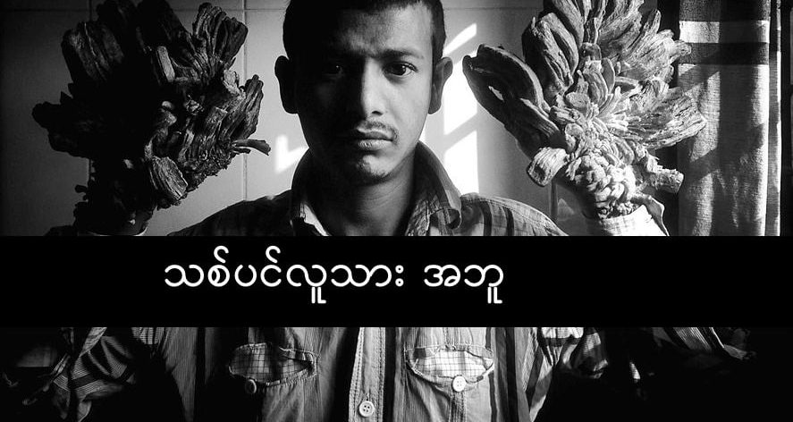

ဘင်္ဂလားဒေရှ် နိုင်ငံက အဘူ ဘာဂျန်ဒါ ဆိုသူဟာ ထူးထူးဆန်းဆန်း သစ်ပင် လူသား ဆိုတဲ့ ရောဂါတစ်မျိုး ခံစားနေ ရပါတယ်။ သူ့လက်တွေ ခြေတွေမှာ သစ်ခေါက်လို အဖုအတက်တွေ ထွက်လာတာပါ။ ဒီအတွက် ပြီးခဲ့တဲ့ နှစ်က ခွဲစိတ်မှု အကြိမ်ကြိမ် ပြုလုပ်ပြီး အဲဒီ အတက်တွေကို ဖယ်ရှားခဲ့ ပါတယ်။ ဒါပေမယ့် ဒီနှစ်ထဲမှာတော့ အဲဒီ အတက်အလက်တွေ ပြထွက်လာတယ်လို့ သူက ပြောပါတယ်။ ၅ ကီလို (၁၁ ပေါင်) အလေးချိန် ရှိတဲ့ ဒီအတက် အလက်တွေကို ခွဲထုတ်ဖို့ ပြီးခဲ့တဲ့ နှစ်က ခွဲစိတ်မှု အကြိမ် ၂၄ ကြိမ်တိတိ ပြုလုပ်ခဲ့ ရပါတယ်။ ပြီးခဲ့တဲ့ နှစ်က ၁၂ လ တိတ် ဆေးရုံမှာ နေခဲ့ရပါတယ်။
မနှစ်က ဆေးရုံဆင်းတုန်းကတော့ ဆရာဝန်တွေက သူ့ရောဂါ ပြောက်သွားပြီလို့ မျှော်လင့်ခဲ့ ကြပါတယ်။ အခုတော့ ထင်သလောက် မလွယ်ဘူးလို့ ဆိုပါတယ်။ ဘာဂျန်ဒါဟာ epidermodysplasia verruciformis လို့ခေါ်တဲ့ ထူးထူးဆန်းဆန်း ရှားပါ့တဲ့ ရောဂါတစ်မျိုး ခံစားနေ ရတာပါ။ ဒီရောဂါဟာ မျိုးရိုးလိုက်တဲ့ ရောဂါတစ်မျိုး ဖြစ်ပြီး အလွန်ရှားပါးပါတယ်။ ဒီသစ်ပင်လူသား ရောဂါ (Tree Man Syndrome) ခံစားရသူတွေမှာ ကြွက်နို့ပေါက်ရင် သာမန်လူတွေလို တစ်ခု နှစ်ခုလောက် မဟုတ်ပဲ အလွန်အမင်း ထိန်းမနိုင် သိမ်းမရ ပွားလာ တတ်ပါတယ်တဲ့။ အခုထိတော့ ဒီရောဂါကို ပျောက်အောင် ကုနိုင်တဲ့ နည်းလမ်း မရှိသေးပါဘူး။ ကုသနည်း တစ်ခုအနေနဲ့ ဒီကြွက်နို့တွေကို ခွဲစိတ်ဖယ်ရှား နိုင်ပေမယ့် အလွယ်တကူ ပြန်ြဖစ် တတ်ပါတယ်တဲ့။ အခြားကုသနည်းတွေကတော့ ရက်တီနွိုက် လို့ ခေါ်တဲ့ ဆေးတွေနဲ့ အင်တာဖီရွန် ဆေးတွေ သုံးတဲ့ နည်းတွေပါ။ ဘယ်နည်းကမှတော့ ကြေနပ်လောက်အောင် ပျောက်ကင်းအောင် မကုသ နိုင်သေးပါဘူး။
Embed from Getty Images ပြီးခဲ့တဲ့ ၂၀၁၆ ခုနှစ်ကလဲ ဘင်္ဂလားဒေ့ရှ် နိုင်ငံမှာပဲ ဆာဟာနာ ခါတွမ် ဆိုတဲ့ အသက် ၁၀ နှစ် အရွယ် ကလေးမလေးမှာ ဒီရောဂါ တွေ့ရှိခဲ့ ကြပါသေးတယ်။ ဒီကလေးမ လေးကတော့ လက်မှာ မဟုတ်ပဲ မျက်နှာမှာ အတက်အလက်တွေ ထွက်လာတာပါ။ ကလေးမလေးရဲ့ အခြေအနေက ဘာဂျန်ဒါလောက် မဆိုးတဲ့ အတွက် ဆရာဝန်တွေကတော့ ကုနိုင်မယ်လို့ မျှော်လင့်ချက် ထားကြပါတယ်။
“ကျွန်တော် လူသာမန် တွေလိုပဲ နေချင်ပါတယ်။ ကျွန်တော့် သမီးလေးကို အခြားအဖေတွေလိုပဲ ချီချင်ပတယ်” လို့ ဘာဂျန်က ပြောပါတယ်။
Photo Source:
(1) By Monirul Alam, CC BY-SA 4.0, Link
(2) Getty Images
Reference:
(1) Live Science | ‘Tree Man’: Unusual Bark-Like Growths Return After 24 Surgeries
(2) CNN | Young girl diagnosed with ‘tree man’ syndrome in Bangladesh
(3) Wikipedia | Epidermodysplasia verruciformis
သစ်ပင်လူသား

February 5, 2018
Other Posts
- ကမ္ဘာအနီးက ဖြတ်သွားမယ့် ဥက္ကာပျံကြီးတွေ
- ရှေးဟောင်းဗုဒ္ဓဆင်းတုတစ်ဆူ အီဂျစ်ပြည်တွင်တူးဖေါ်ရရှိ
- ငှက်ပျောခွံမှ ဟိုက်ဒြိုဂျင် လောင်စာထုတ်နည်းသစ်
- Zumwalt Class ကိုယ်ပျောက် စစ်သင်္ဘော
- လိပ်ပြာပုံ အာကာသ နက်ဗြူလာ ဓါတ်ငွေ့တိမ်တိုက်ကြီး
- ပြင်ပဂြိုဟ်ရဲ့ လေထုကို ဂျိမ်စ်ဝက်ဘ် က လှစ်ပြလိုက်ပြီ
- နဂါးလူသား Dragon Man
- ဂယ်လိုတင်ခေါင်းဖြတ်စက်
- သစ်ပင်လူသား
- နောက်တကြိမ် ပြန်မြင်တွေ့ရမယ့် ဆူပါနိုဗာ ကြယ်ပေါက်ကွဲ မှုကြီး